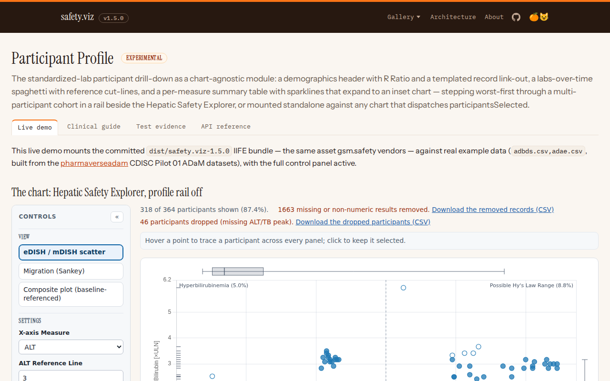

Participant Profile: test evidence Experimental
Requirement-traced qualification evidence for the safety.viz participant-profile module.
Requirement matrix ↗ — the reviewed source specification these tests trace to.
- Scope
- 25 coverage rows24 distinct requirement IDs
- Tests executed
- 288 automated checks26 browser · 262 unit
- Result
- pass all passing6 evidence screenshots
- Generated
- 2026-07-24 12:24 UTC
- Environment
linux 6.17.0-1020-azure · node v22.23.1 · playwright 1.61.1 · chromium 149.0.7827.55- Test run
- Actions run #30092922548
Scope & approach
Traceability for the participant-profile module — the standardized-lab participant drill-down (demographics header, labs-over-time spaghetti, and per-measure summary table with sparklines and an expandable inset) that the original SafetyGraphics hep-explorer welded into its eDISH renderer, lifted into a standalone, chart-agnostic module — built under #98; parent requirement obot.roadmap#45, per the convention in CONTRIBUTING.md.
Requirement IDs use the module's **PPRF-*** area scheme, mapped onto the issue's PPRF-1..9 requirements: PPRF-CORE-* (the two mounts, ingest, and the data contract — PPRF-1), PPRF-HDR-* (the participant header — PPRF-2), PPRF-SPAG-* (the labs-over-time spaghetti — PPRF-3), PPRF-TBL-* (the measure table, sparklines, inset, and optional listing — PPRF-4), PPRF-STEP-* (the worst-first cohort stepper — PPRF-5), PPRF-EVT-* (the participantsSelected event contract — PPRF-6), and PPRF-HEP-* (the hep-explorer adoption that replaced the legacy welded drill-down — PPRF-7). The hep-explorer adoption tests live in this module's spec file deliberately: the evidence pipeline routes browser captures by spec filename, and the adoption is this module's behaviour even though the fixtures drive hep-explorer.
Each table row traces one requirement to the automated test(s) that evidence it: the Requirement column shows the reviewed requirement text and its ID, the source-matrix rows link back to the specification, the issue column links the implementing work, and the result column shows the recorded outcome of every matching test from the committed evidence.json with its captured screenshots. Browser evidence is captured at fixed conditions (1280×800, device scale 1) on the canonical Linux CI environment.
Browser evidence (Playwright — tests/e2e/participant-profile.spec.js)
6 requirement rows · 6 tests
| Requirement | Source matrix rows | Issue | Tests & evidence |
|---|---|---|---|
PPRF-HEP-001, PPRF-CORE-001 PPRF-HEP-001 hep-explorer enables the dock by default in both views: scatter click keeps the on-chart visit trace and rugs while the module replaces the bespoke drawDetail, which is deleted. PPRF-CORE-001 The participant profile is a single module in src/participant-profile/ containing no renderer-specific logic; both mounts render the same header, spaghetti and measure-table composition from the same cleaned-row input. | PPRF-HEP-001, PPRF-CORE-001 | #98 |
|
PPRF-HEP-005 PPRF-HEP-005 A background click (empty selection dispatch) clears the selection, empties the dock slot, and the shell's :empty rule hides the block. | PPRF-HEP-005 | #98 |
|
PPRF-HEP-002, PPRF-STEP-001 PPRF-HEP-002 In the composite view, focusing a single participant (click or selector) opens the docked profile and a multi-participant selection shows the stepper. PPRF-STEP-001 When the selection holds more than one participant, the dock collapses to a stepper (◀ k of N · id ▶) that renders the full profile for the current participant and keeps the host chart highlight in sync while stepping. | PPRF-HEP-002, PPRF-STEP-001 | #98 |
|
PPRF-HEP-003 PPRF-HEP-003 In the composite view, focusing a single participant — point click or the shared Participants selector — opens the full docked profile, not the stepper. | PPRF-HEP-003 | #98 |
|
PPRF-HEP-004 PPRF-HEP-004 The migration ribbon hand-off arrives in the composite view with the dock opened on the carried cohort, with no dock-specific edits to the migration, composite or selection code paths. | PPRF-HEP-004 | #98 |
|
PPRF-EVT-001, PPRF-CORE-002 PPRF-EVT-001 Docked, the module derives its content from the host chart's selection state including clear; standalone, it listens for participantsSelected (payload {detail:{data: ids}}) on a configurable target; in neither mount does it dispatch selection events itself. PPRF-CORE-002 SafetyViz.participantProfile(el, data, config) renders the profile standalone, ingesting the standard long-lab data contract. | PPRF-EVT-001, PPRF-CORE-002 | #98 |
|
{kind=link}
{kind=link}
{kind=link}
{kind=link}
Unit evidence (Vitest — tests/unit/participant-profile/)
19 requirement rows · 123 tests
| Requirement | Source matrix rows | Issue | Tests & evidence |
|---|---|---|---|
PPRF-CORE-001 (module export: factory + dock) PPRF-CORE-001 The participant profile is a single module in src/participant-profile/ containing no renderer-specific logic; both mounts render the same header, spaghetti and measure-table composition from the same cleaned-row input. | PPRF-CORE-001 | #98 |
|
PPRF-CORE-002 (standalone long-lab contract guard) PPRF-CORE-002 SafetyViz.participantProfile(el, data, config) renders the profile standalone, ingesting the standard long-lab data contract. | PPRF-CORE-002 | #98 |
|
PPRF-CORE-003 (defaults + settings normalization) PPRF-CORE-003 When docked, the profile renders into an sv-profile shell slot below the host chart card and is fed the host chart's cleaned rows, performing no second data ingest. | PPRF-CORE-003 | #98 |
|
PPRF-CORE-004 (standalone chrome: shell mount, hidden chart card) PPRF-CORE-004 The standalone mount renders the house shell chrome — sidebar controls with the chart card hidden, the profile block owning the main column — and shows an idle note naming the listen target until a selection arrives. | PPRF-CORE-004 | #98 |
|
PPRF-CORE-005 (docked mount: pre-cleaned rows, imperative feed) PPRF-CORE-005 profileDock(container, settings) mounts the dock imperatively: it consumes the host's pre-cleaned rows verbatim — no checkInputs, no cleanData — installs no event listener, and is driven via show/clear/resize/destroy. | PPRF-CORE-005 | #98 |
|
PPRF-HDR-001 (demographics, R Ratio, P_ALT pass-through, Clear) PPRF-HDR-001 The profile header shows the participant id, the demographic fields configured in config.details, the computed R Ratio, and P_ALT where computable. | PPRF-HDR-001 | #98 |
|
PPRF-HDR-002 ({id}-templated link-out, closes #53) PPRF-HDR-002 The header provides a Clear affordance that empties the profile and, when docked, clears the host chart's selection highlight. | PPRF-HDR-002 | #98 |
|
PPRF-SPAG-001 (series building, cut lines, spaghetti render) PPRF-SPAG-001 The labs-over-time spaghetti draws one day-indexed line per key measure, toggling between ×ULN and ×baseline display, with non-key measures available behind a toggle. | PPRF-SPAG-001 | #98 |
|
PPRF-SPAG-002 (×ULN/×Baseline and lab-subset controls) PPRF-SPAG-002 Each spaghetti measure applies its per-measure reference cut: the cut line appears on hover/focus and points at or above the cut render filled while points below render unfilled. | PPRF-SPAG-002 | #98 |
|
PPRF-SPAG-003 (measure color palette) PPRF-SPAG-003 Each measure receives a stable categorical palette color shared by its spaghetti line, sparkline and inset, cycling when a profile carries more measures than colors. | PPRF-SPAG-003 | #98 |
|
PPRF-TBL-001 (per-measure summary model + table render) PPRF-TBL-001 The measure table lists every measure — key measures first, extras behind a "show N additional" toggle — with N, min, median, max and an inline sparkline per row. | PPRF-TBL-001 | #98 |
|
PPRF-TBL-002 (sparklines with normal-range and population bands) PPRF-TBL-002 Activating a row's sparkline expands an inset line chart showing the LLN–ULN normal-range band, population-extent guides defaulting to the 1st/99th percentiles, and marked outliers. | PPRF-TBL-002 | #98 |
|
PPRF-TBL-003 (sparkline → inset expansion lifecycle) PPRF-TBL-003 The inset line chart computes a padded y-domain unioning the participant's values, the population extent and the finite normal-range limits, and paints the LLN–ULN band and dashed population-extent guides in chart space with outlier points filled. | PPRF-TBL-003 | #98 |
|
PPRF-TBL-004 (non-key-measure "show N additional" toggle) PPRF-TBL-004 The extras toggle uses the original's "Show N additional measure(s):" copy, reveals and re-hides the non-key measure rows, and collapses any open extra-row inset when extras are hidden. | PPRF-TBL-004 | #98 |
|
PPRF-TBL-005 (optional shared record listing) PPRF-TBL-005 The optional participant record listing (listing: true) renders the participant's rows through the shared listing renderer with columns derived from the lab mapping by default, a listing_cols override, and paging. | PPRF-TBL-005 | #98 |
|
PPRF-STEP-001 (stepper render, wrap/clamp, keyboard operation) PPRF-STEP-001 When the selection holds more than one participant, the dock collapses to a stepper (◀ k of N · id ▶) that renders the full profile for the current participant and keeps the host chart highlight in sync while stepping. | PPRF-STEP-001 | #98 |
|
PPRF-STEP-002 (worst-quadrant-first ordering, peak-severity fallback) PPRF-STEP-002 The stepper orders participants worst quadrant first, falling back to peak severity where quadrant classification does not apply. | PPRF-STEP-002 | #98 |
|
PPRF-EVT-001 (participantsSelected listener on the configured target) PPRF-EVT-001 Docked, the module derives its content from the host chart's selection state including clear; standalone, it listens for participantsSelected (payload {detail:{data: ids}}) on a configurable target; in neither mount does it dispatch selection events itself. | PPRF-EVT-001 | #98 |
|
PPRF-EVT-002 (programmatic selection + on_clear/on_step callbacks) PPRF-EVT-002 setSelected() takes the same path as the participantsSelected listener, and outbound coordination is callbacks only: stepper navigation reports through on_step and Clear through on_clear — the module dispatches no selection events. | PPRF-EVT-002 | #98 |
|
{kind=link}
Visual evidence
Every screenshot below is a committed baseline: the same PNG is the visual-regression baseline the browser suite asserts against and the evidence artifact shown here. Click any capture for the full-resolution image.
PPRF ACC 001 keyboard stepper PPRF EVT 001 linked charts demo 
PPRF GATE 001 done gate demo PPRF HEP 001 scatter dock PPRF HEP 004 migration handoff dock PPRF STEP 001 composite stepper
{kind=link}
Source-matrix routing status
The source matrix (participant-profile.md) is authored as a companion PR to the requirements repo (obot.agent/docs/requirements/) and not yet merged — until it lands, docs/requirements/participant-profile.json is absent and the evidence page renders requirement IDs alone; the config's matrix link resolves on merge. The matrix rows use the same PPRF-<AREA>-<NUM> IDs as the tables above, so no re-keying is needed when the extract arrives.
- Implemented (
browser/unitabove): both mounts (standalone factory with its own ingest and shell chrome; docked mount consuming a host's pre-cleaned rows), the participant header with R Ratio, P_ALT pass-through and the{id}-templated link-out, the standardized labs-over-time spaghetti with per-display cut lines, the measure table with banded sparklines and the expandable inset, the worst-first cohort stepper, the one-wayparticipantsSelectedevent contract (listen, never dispatch), and the hep-explorer adoption that deleted the legacy.hep-detaildrill-down in favour of the sharedsv-profileshell slot. - **Note (
PPRF-HEP-*fixtures):** the adoption records in the browser table drive hep-explorer fixture pages; they live in this spec file so their captures land in this module's evidence set. The adoption's unit coverage (tests/unit/hep-explorer/profile-adoption.test.js, tagged PPRF-HEP-001) routes to the hep-explorer evidence set by directory, so it appears there rather than in the unit table above. hep-explorer's own selection regression suite (tests/e2e/hep-explorer.spec.js, HEP-SELECT-\*) was rewritten against the docked profile and remains in the hep-explorer evidence set. - Accessibility (PPRF-8): keyboard operation is asserted in the stepper and inset unit suites; a dedicated
PPRF-ACC-*browser pass (tab order, focus-visible rings, labeled regions, reduced motion) is planned alongside the requirements-matrix PR. - Done-gate (PPRF-9): this document, the gallery card, the linked-charts demo, the schema, and the generated API reference are the gate's artifacts; evidence baselines regenerate on the canonical Linux environment via the evidence-update workflow after merge.
Reproducing this report
The evidence set is regenerated from a full test run and committed with the code it qualifies; CI fails when they drift. To verify or rebuild it:
npm ci
npm run evidence:check # compare a fresh run against the committed evidence
npm run evidence # regenerate docs/evidence/participant-profile/evidence.jsonScreenshot baselines are canonical to the Linux CI runner; the repository's Update evidence baselines workflow is the authoritative way to refresh them. See CONTRIBUTING.md for the traceability convention.